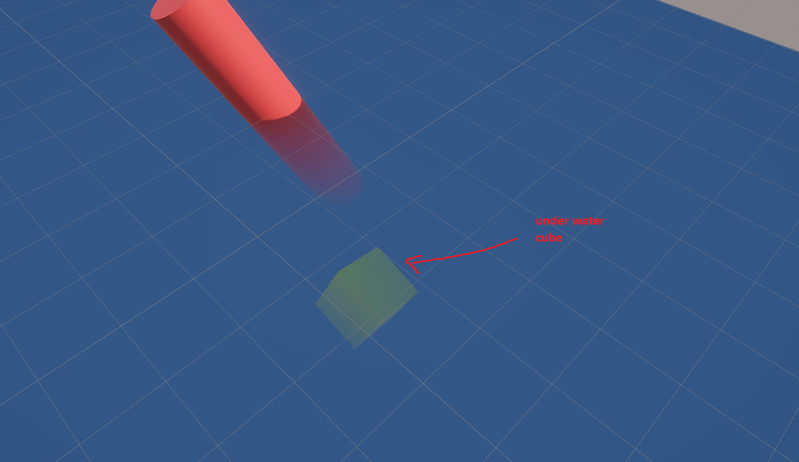
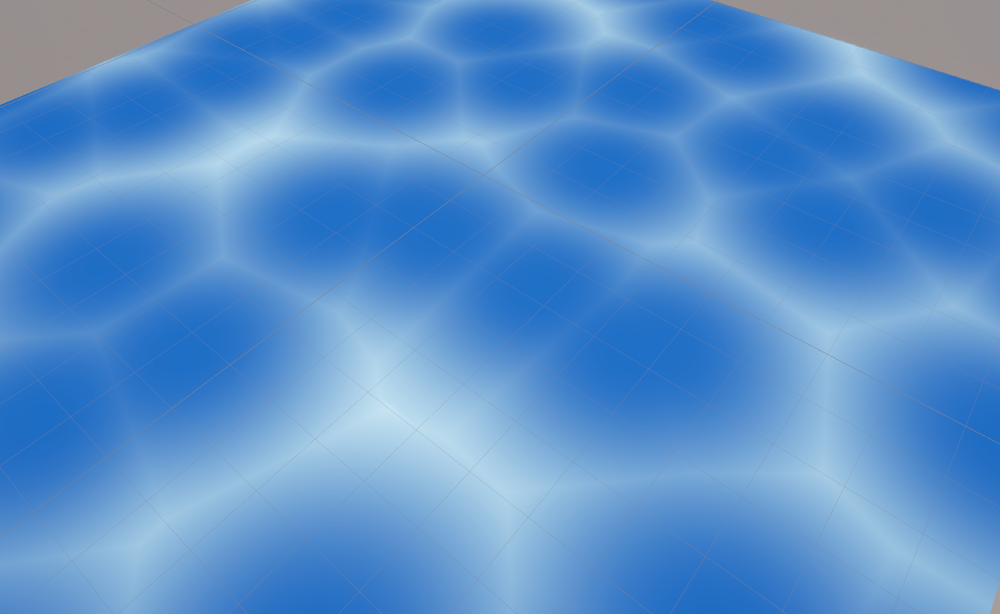
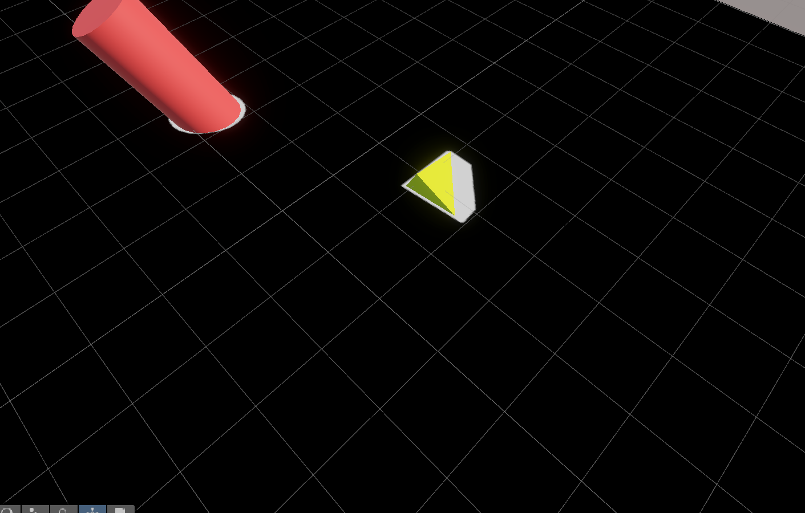
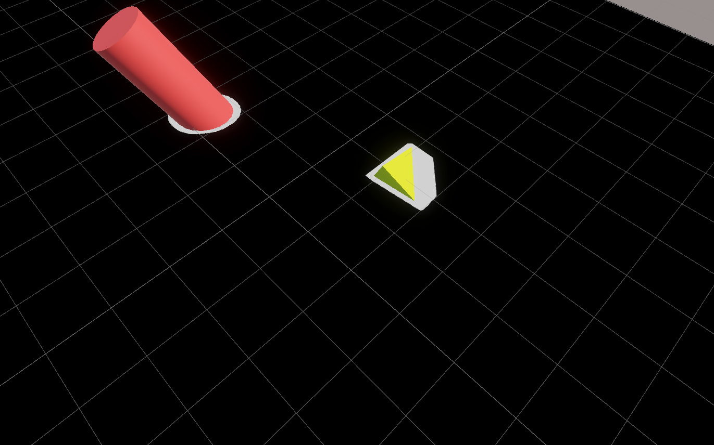
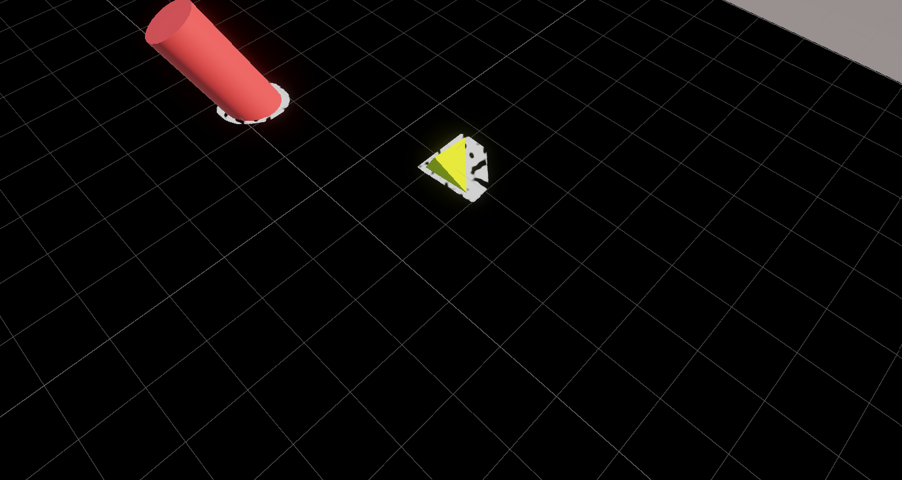

Stylised Water with a Camera-Based Foam Mask
Unity 6 (URP) · Shader Graph · C# · render textures — Centrale Nantes, infoRV (virtual reality) track, 2026.
A water shader built around one technique I wanted to explore: placing foam with a dedicated mask camera instead of depth differences, so the foam stays stable from any viewing angle.
1. Depth-based colour
Scene depth minus the water surface's own depth gives how much water you look through. That thickness, normalised and clamped, blends the scene colour behind the water towards a deep colour, a simple and controllable imitation of light absorption.

2. Animated surface pattern

Voronoi distance raised to a power leaves thin bright lines between cells, like light patterns on a pool floor. The UVs scroll over time and a triangle wave drives the Voronoi angle offset, so the cells drift and reshape.
3. Foam from a second camera
An orthographic camera sits under the water, looks straight up, and only sees a thin slice around the water line (near/far planes set by a C# script). It renders into a render texture: white wherever an object touches the water. The camera snaps to a texel grid as it follows its target, so the foam does not shimmer.
Why not depth-based foam? Depth foam depends on the player camera: at grazing angles the same foam covers a much larger area. The mask camera is independent of the view, so foam looks identical from every angle. The trade-off is one extra render.



4. Turning the mask into foam
- Each water pixel converts its world XZ position into a UV on the mask, relative to the mask camera's position and size (sent by the script).
- The mask is sampled 9 times (centre + 8 neighbours) and the maximum is kept, a dilation that grows a ring around each object. A smoothstep softens the edge (raw mask left, dilated ring centre).
- The ring is multiplied by slowly drifting gradient noise, so the foam gets moving gaps (right).
Limitations and next steps
The overall look is still basic: no waves, specular highlights, or refraction distortion yet, and the foam is a static mask rather than a fading trail behind moving objects. Those are the next things I would add.